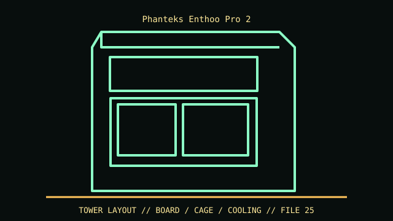

[ IDENTIFIED ENCLOSURE // ENTHOO PRO 2 FULL TOWER (TEMPERED-GLASS VERSION) ]
Phanteks Enthoo Pro 2
580 × 240 × 560 mm (H × W × D); GPU up to 503 mm and 11 expansion slots in open configuration.

VARIANT / ARCHIVAL CAVEAT: Enthoo Pro 2 differs from Pro 2 Server Edition and Enthoo Pro original. Confirm TG/DRGB SKU, included HDD brackets and second-system accessories.
Mechanical specifications and fit
| Catalog identity | Enthoo Pro 2 full tower (tempered-glass version) |
|---|---|
| Dimensions and clearances | 580 × 240 × 560 mm (H × W × D); GPU up to 503 mm and 11 expansion slots in open configuration. |
| Drive bays / mounts | Four 3.5-inch positions included, expandable to twelve; up to eleven 2.5-inch mounts with accessory brackets. |
| Board, system and compatibility | SSI-EEB/E-ATX/ATX/mATX/Mini-ITX; optional second-system support and radiator trays affect board/cable arrangement. |
| Revision / identification | Enthoo Pro 2 differs from Pro 2 Server Edition and Enthoo Pro original. Confirm TG/DRGB SKU, included HDD brackets and second-system accessories. |
Preservation and installation notes
Enthoo Pro 2 differs from Pro 2 Server Edition and Enthoo Pro original. Confirm TG/DRGB SKU, included HDD brackets and second-system accessories.
SSI-EEB/E-ATX/ATX/mATX/Mini-ITX; optional second-system support and radiator trays affect board/cable arrangement.
- Capture the complete model/SKU, serial/date label, board assembly and bay/backplane/riser identifiers before disassembly; keep matched screws, trays, carriers, feet and cables with the case.
- Check the cited manual's specific build option before transferring hardware. Published maximum GPU, drive, fan or radiator capacity may not be simultaneous when a removable cage or alternative riser occupies that volume.
- For rack and vintage systems, preserve the exact rails, shields, doors, brackets and model-specific safety instructions; do not infer compatibility from a familiar brand or physical connector shape.
Manufacturer manuals and archival sources
- Phanteks Enthoo Pro 2 product specificationsPrimary manufacturer or model-specific technical/manual reference used for the identification and mechanical data above.
- Phanteks Enthoo Pro 2 support/product referenceSecond product manual, manufacturer resource or established technical archive; choose the exact regional SKU and revision.
When exact dimensions depend on configuration, the text says so; verify the measured specimen before making a fit or restoration decision.